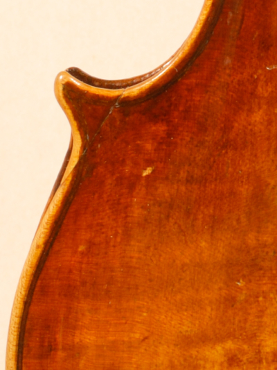
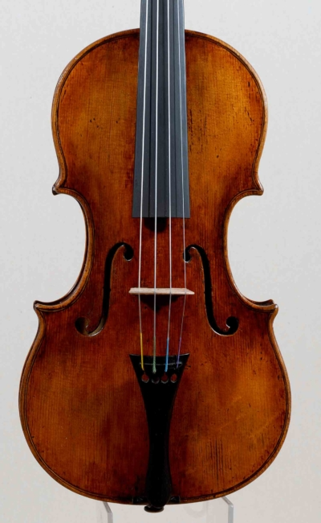
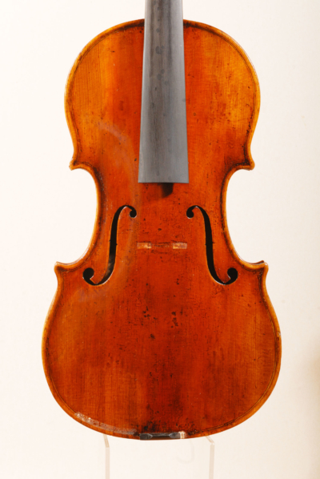
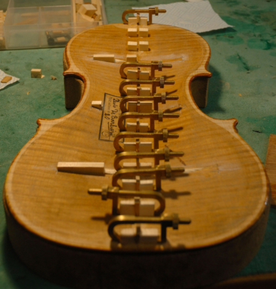
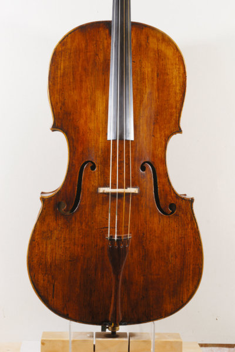
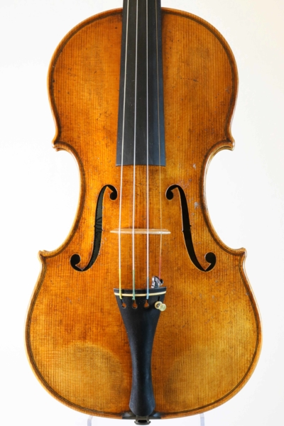

I love the scent of the wood and feel its warmth by touch — almost feeling the life that animates it.
I love the curves and the elegant shape of the instruments, and searching, in their soft flowing, the harmony of proportions.
I love to catch, in the deep, the colour of the sound — a voice unique and mysterious, vibrant and free, able to evoke deep emotions.
Making and repairing string instruments lets me fully live this passion. To do it, I chose the long way of research, of confrontation, of experimentation — to grow slowly but solidly in an art that for centuries has enchanted people with its charm and mystery.

Five ways of working the wood
Recent from the bench
The latest creations — fruit of love, time, instinct and naturalness.






Come and hear
the wood speak.
The workshop welcomes musicians and collectors — for a new instrument, a restoration, or simply to listen.